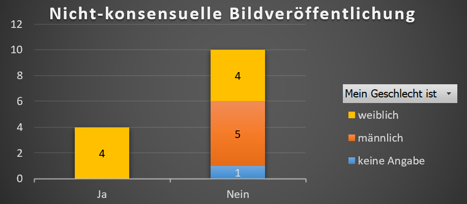
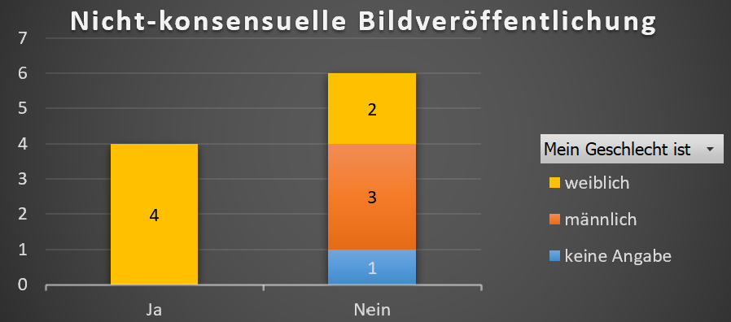

Wir haben eine Umfrage in der Klasse zum Umgang mit Social Media und zum Freizeit- und Lernverhalten durchgeführt......Text...Text.....Eine Liste mit allen Fragen der Umfrage finden Sie hier.
In den folgenden beiden Abschnitten möchten wir zwei Befunde der Auswertung genauer erläutern.....Text...Wir haben.....Text....Text
Wie zu erwarten war....die folgenden beiden Diagramme zeigen....
Die Auswertung zeigt.....
Wird die gleiche Auswertung nur für Jugendliche gemacht, die weniger als...Snaps pro Tag machen, ergibt sich.....
Abschliessend kann man sagen....Text....Text....Die drei bemerkenswertesten Ergebnisse der Auswertung waren für uns: